Capítulo 11. Arquiteturas e estilos aplicados
Os capítulos anteriores descreveram o núcleo da arquitetura de software, fornecendo as notações, ferramentas e técnicas que permitem ao projetista especificar uma arquitetura, implementá-la e implantá-la. Com base nesses capítulos, deve-se ser capaz de abordar qualquer problema de projeto e avançar com sucesso. Uma declaração tão simples, no entanto, desmente as dificuldades que surgem ao lidar com problemas complexos. Alguns problemas simplesmente não se prestam a soluções óbvias ou a estruturas simples e uniformes. Um tema que caracterizou o capítulo sobre design de arquiteturas foi o benefício das lições da experiência. Continuamos esse tema neste capítulo, discutindo como uma grande variedade de problemas arquitetônicos importantes e desafiadores foi resolvida, ampliando assim o repertório de insights e estilos que um designer possui para aplicar em seu próprio problema.
Nossa motivação é o reconhecimento de que a maioria das novas aplicações é complexa e precisa lidar com uma variedade de questões. Notavelmente, muitas aplicações precisam lidar com questões que surgem do fato de estarem em uma rede de computadores, onde a aplicação interage com outros sistemas de software localizados remotamente. Aplicações baseadas em rede podem envolver a Web, focar em computação paralela ou focar em interação entre empresas. Descrevemos estilos arquitetônicos para essas e outras aplicações.
Neste capítulo, também usamos a lente da arquitetura de software para explicar uma variedade de noções de design que são pelo menos em parte fundamentalmente arquitetônicas, mas que foram amplamente descritas em termos idiossincráticos, como "computação em grade" e aplicações peer-to-peer (P2P) — terminologia pertencente a outras subcomunidades de ciência da computação, e não à engenharia de software. Essa descrição permite uma comparação mais direta de seus méritos com abordagens alternativas para problemas semelhantes.
Os objetivos deste capítulo são:
As seções deste capítulo tratam primeiro de questões relacionadas à distribuição e à rede; O tema cada vez mais importante das arquiteturas descentralizadas é então considerado. O capítulo conclui com uma seção sobre arquiteturas de alguns domínios específicos.
Resumo deCapítulo 11
ARQUITETURAS DISTRIBUÍDAS E EM REDE
A expressão "aplicação distribuída" é usada para designar desde uma aplicação simplesmente distribuída entre múltiplos processos do sistema operacional todos rodando no mesmo monoprocessador físico, até aplicações integradas que rodam em múltiplos computadores conectados pela Internet. Aplicações distribuídas estão em uso geral desde pelo menos o final da década de 1970, quando as tecnologias comerciais de redes começaram a proliferar, e tornaram-se cada vez mais comuns nos anos 1980 com o advento de chamadas eficientes de procedimentos remotos e a disponibilidade de poder computacional barato nas bordas da rede. Consequentemente, não pretendemos oferecer algo remotamente próximo de um tratamento detalhado dessas aplicações aqui. Uma variedade de excelentes textos está disponível que trata o tema em profundidade [ver, por exemplo, (Emmerich 2000; Tanenbaum e van Steen 2002)].
EmCapítulo 4discutimos uma abordagem popular para construir aplicações distribuídas, a CORBA, como representante de uma variedade de abordagens semelhantes, como o Distributed Computing Environment (DCE) do The Open Group (The Open Group 2005). Essa apresentação omitiu a consideração das questões mais amplas associadas às aplicações distribuídas, por isso começamos com essa discussão aqui.
Limitações do ponto de vista dos sistemas distribuídos
Uma das principais motivações para o desenvolvimento da tecnologia CORBA, e de fato de grande parte da tecnologia de computação distribuída, foi permitir o uso do estilo de desenvolvimento orientado a objetos em um contexto de computação distribuída. Uma escolha de design particular feita pelos designers foi tentar criar a ilusão de "transparência da localização". Ou seja, que um desenvolvedor não deveria precisar saber onde um determinado objeto está localizado para interagir com ele. (Várias outras formas de transparência também são suportadas, como a transparência de implementação, na qual o desenvolvedor não precisa saber ou se preocupar com a escolha da linguagem de programação na qual um objeto específico é implementado.) Se tal transparência for fornecida ao desenvolvedor, todas as preocupações e questões associadas ao trabalho em uma rede podem ser ignoradas, pois essas questões serão resolvidas pelo suporte CORBA subjacente.
Infelizmente, uma rápida olhada nos detalhes da API da CORBA, ou seja, na interface com a qual os programadores precisam trabalhar, revela que alcançar tal transparência não se mostrou totalmente possível. O CORBA possui uma variedade de mecanismos especiais, visíveis para o programador, que revelam a presença de uma rede por baixo e a possibilidade de vários problemas de rede impactarem o modelo de programação, como falha de rede ou tempo de resposta expirado.
As múltiplas dificuldades de tentar mascarar a presença de redes e suas propriedades para os desenvolvedores de aplicações foram reconhecidas cedo e foram canonizadas por Peter Deutsch em sua lista curta "Falácias da Computação Distribuída" (Deutsch e Gosling 1994). Como Deutsch e seu colega James Gosling dizem: "Essencialmente todo mundo, quando constrói uma aplicação distribuída pela primeira vez, faz as seguintes oito suposições. Tudo isso se mostra falso a longo prazo e tudo causa grandes problemas e experiências de aprendizado dolorosas." As falácias são, conforme declarado por Gosling:
Abordar diretamente qualquer uma dessas questões pode levar a escolhas e preocupações arquitetônicas específicas. Por exemplo, se a rede for não confiável, então a arquitetura de um sistema pode precisar ser dinamicamente adaptável. A presença de latência (atraso no recebimento ou entrega de uma mensagem) pode exigir que as aplicações possam prosseguir com base em valores estimados criados localmente das mensagens, com base no valor das mensagens previamente recebidas. Limitações de largura de banda e variabilidade podem exigir a inclusão de estratégias adaptativas para acomodar as condições locais. A existência de mais de um domínio administrativo pode exigir que mecanismos explícitos de confiança sejam incorporados. Acomodar a heterogeneidade da rede pode envolver a imposição de camadas de abstração ou o foco em padrões de intercâmbio.
Lidar explicitamente com essas questões que surgem devido à presença de redes leva à nossa consideração de arquiteturas baseadas em rede e descentralizadas. Em vez de tentar ser abrangentes em nossa cobertura, selecionamos vários exemplos profundos que revelam como arquiteturas podem ser projetadas para atender necessidades e objetivos específicos.
ARQUITETURAS PARA APLICAÇÕES BASEADAS EM REDE
Começamos com uma discussão extensa sobre o estilo REpresentational State Transfer (REST), que foi introduzido pela primeira vez emCapítulo 1. O REST foi criado como parte do esforço para levar a Web de sua forma mais primitiva ao sistema robusto e onipresente do qual confiamos hoje. A derivação do REST é instrutiva, pois a interação entre os requisitos do domínio da aplicação (ou seja, hipertexto descentralizado distribuído) e as partes constituintes do estilo pode ser claramente mostrada.
Visibilidade do Usuário da Rede
"Tanenbaum e van Renesse ... faça uma distinção entre sistemas distribuídos e sistemas baseados em rede: um sistema distribuído é aquele que para seus usuários se parece com um sistema centralizado comum, mas roda em múltiplas CPUs independentes. Em contraste, sistemas baseados em rede são aqueles capazes de operar em toda uma rede, mas não necessariamente de forma transparente para o usuário. Em alguns casos, é desejável que o usuário esteja ciente da diferença entre uma ação que requer uma requisição de rede e uma que é satisfatível em seu sistema local, especialmente quando o uso da rede implica um custo extra de transação...." —Roy T. Fielding (Fielding 2000)
O Estilo de Transferência de Estado Reapresentacional (REST)
O capítulo 1 deste livro didático começou com uma breve exposição do estilo arquitetônico REST, descrevendo como ele foi usado para projetar a World Wide Web pós-1994 (que inclui o protocolo HTTP/1.1, a especificação Uniform Resource Identifier e outros elementos). O objetivo dessa apresentação era começar a indicar o poder da arquitetura de software, mostrando seu impacto em uma das tecnologias mais difundidas do mundo. Essa apresentação também indicou que a arquitetura de software não é algo que se possa necessariamente derivar olhando para um pedaço de código-fonte (por exemplo, o servidor Web Apache), pois a arquitetura da Web representa um conjunto de decisões de design que transcende muitos programas independentes. É a forma como esses programas precisam funcionar juntos que o estilo REST determina.
A apresentação emCapítulo 1não descreveu como o estilo REST foi desenvolvido: o que motivou sua criação e quais influências arquitetônicas anteriores foram combinadas para gerar esse estilo influente. A apresentação abaixo aborda esses temas. Além de apenas entender o "porquê" da Web, o leitor deve ver como estilos simples selecionados podem ser combinados de maneiras criteriosas para atender a um conjunto complexo e conflitante de necessidades.
Drivers de Aplicação
A necessidade de uma Web de próxima geração surgiu do sucesso excepcional da primeira geração — e da incapacidade da arquitetura dessa primeira geração de funcionar adequadamente diante do enorme crescimento na extensão e uso da Web. As características da Web como aplicação e as propriedades de sua implantação e uso fornecem o contexto crítico para o desenvolvimento do REST.
O WWW é fundamentalmente um aplicativo de hipermídia distribuído. A noção conceitual é de um vasto espaço de informações inter-relacionadas. A navegação desse espaço está sob o controle do usuário; quando apresentado a uma informação, o usuário pode escolher visualizar outra, onde a referência a essa segunda peça está contida na primeira. A informação é distribuída pela Internet, portanto, um aspecto da aplicação é que as informações selecionadas para visualização — que podem ser bastante grandes — devem ser levadas pela rede até a máquina do usuário para apresentação. (Note que alguns usos atuais da Web, como para transações business-to-business, não se encaixam nesse modelo e são discutidos posteriormente em Web services.)
Como as informações devem ser levadas ao usuário através da rede, todas as questões de rede listadas na seção anterior são motivo de preocupação. A latência, por exemplo, pode determinar a satisfação do usuário com a experiência de navegação: As ações no cliente/agente de usuário (ou seja, o navegador) devem ser mantidas rápidas. Como grandes conjuntos de dados são transferidos, é preferível que parte das informações possa ser apresentada ao usuário enquanto o restante da transferência de dados ocorre, para que o usuário não fique esperando. Como a Web não é apenas uma aplicação hipermídia distribuída, mas uma aplicação multiusuário, também deve haver provisão para circunstâncias em que muitos usuários solicitam as mesmas informações ao mesmo tempo. A latência intrínseca na transferência da informação é agravada pela possível disputa pelo acesso ao recurso em sua fonte.
A Web também é uma aplicação heterogênea, com múltiplos proprietários. Um dos objetivos da Web era permitir que muitas partes contribuíssem para o espaço de informação distribuído, permitindo que espaços de informação administrados localmente fossem conectados ao da comunidade em geral, e isso fosse feito com facilidade. Isso implica que o espaço de informação não está sob uma única autoridade — é uma aplicação descentralizada. A abertura da Web implica que nem a uniformidade das implementações de suporte nem as qualidades dessas implementações podem ser presumidas. Além disso, as informações assim vinculadas podem não estar disponíveis de forma confiável. Informações anteriormente disponíveis podem se tornar indisponíveis, exigindo provisão para lidar com links quebrados.
A heterogeneidade da Web também tem uma visão prospectiva: Diversos contribuintes para o espaço da informação podem identificar novos tipos de informação a serem vinculados (como um novo tipo de mídia) ou novos tipos de processamento a serem realizados em resposta a uma solicitação de recuperação de informação. Portanto, é necessário prever a prorrogação.
Por fim, a questão da escala domina as preocupações. Qualquer estilo arquitetônico proposto deve ser capaz de manter os serviços da Web diante do crescimento rápido e contínuo tanto de usuários quanto de provedores de informação. Lembre-se de que o REST foi desenvolvido durante um período em que o número de sites dobrava a cada três a seis meses! A escala da aplicação hoje — em termos de usuários e sites — está muito além do que se imaginava em 1994: 50 milhões de sites ativos / 100 milhões de nomes de host.
Derivação de REST
O estilo REST foi criado para responder diretamente a essas necessidades de aplicações e desafios de design. O REST, como conjunto de escolhas de design, baseou-se em uma rica herança de princípios e estilos arquitetônicos, como os apresentados emCapítulo 4.Figura 11-1resume o patrimônio arquitetônico do REST. Escolhas-chave nessa derivação, explicadas em detalhes abaixo, incluem:
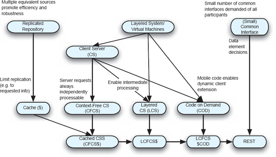
Figura 11-1. Derivação nocional do estilo REST a partir de estilos mais simples.
Também foi fundamental na derivação a decisão de exigir que as requisições no servidor fossem independentemente servíveis ou "livres de contexto"; ou seja, o servidor pode entender e processar qualquer solicitação recebida com base apenas nas informações contidas na solicitação. Isso apoia escalabilidade e robustez. Por fim, a extensão dinâmica por meio de código móvel aborda extensibilidade independente. Os parágrafos a seguir detalham essas questões e opções. Exposições mais detalhadas podem ser encontradas em (Fielding 2000; Fielding e Taylor 2002).
Separação em Camadas. A decisão central de design para o REST foi o uso de sistemas em camadas. Como descrito emCapítulo 4Sistemas em camadas podem assumir várias formas, incluindo cliente-servidor e máquinas virtuais. As separações baseadas em princípios de camadas podem ser encontradas em vários lugares no REST.
O uso de uma arquitetura cliente-servidor (CS) era intrínseco à Web original. Navegadores rodando na máquina do usuário têm a responsabilidade pela apresentação das informações ao usuário e são o local de determinação das próximas interações do usuário com o espaço de informação.
Os servidores têm a responsabilidade de manter as informações que compõem a Web e entregar representações dessas informações aos clientes. Softwares que abordam a interface do usuário podem, portanto, evoluir independentemente do software que precisa gerenciar grandes quantidades de dados e responder a solicitações de diversas fontes. Essa separação de responsabilidades simplifica ambos os componentes e possibilita sua otimização.
O estilo cliente-servidor é então refinado ainda mais pela imposição da exigência de que as requisições para um servidor sejam processáveis de forma independente; ou seja, o servidor é capaz de entender e processar qualquer requisição com base apenas nas informações daquela única requisição. Essa restrição de projeto é frequentemente chamada de "servidor sem estado", e o protocolo HTTP/1.1 correspondente é frequentemente chamado de "protocolo sem estado". Essa terminologia é lamentável, pois sugere que o servidor não mantém nenhum estado. O servidor certamente pode manter estados de vários tipos: solicitações anteriores de clientes podem ter causado o armazenamento de novas informações em um banco de dados mantido pelo servidor, por exemplo. Na verdade, o foco aqui é que o servidor não mantém um registro de nenhuma sessão de interações com um cliente. Com esse requisito, o servidor fica livre para desalocar quaisquer recursos que tenha usado para responder a uma solicitação do cliente, incluindo memória, após a solicitação ter sido tratada. Na ausência desse requisito, o servidor poderia ser obrigado a manter esses recursos até que o cliente indicasse que não emitiria mais nenhuma solicitação naquela sessão. No diagrama, rotulamos essa especialização do estilo CS como "livre de contexto", já que uma requisição de servidor pode ser compreendida e processada independentemente de qualquer contexto de requisições ao redor.
A imposição dessa exigência nas interações entre clientes e servidores apoia fortemente a escalabilidade, já que os servidores podem gerenciar eficientemente seus próprios recursos — sem deixá-los presos na expectativa de uma próxima solicitação. Além disso, todos os servidores com acesso aos mesmos bancos de dados back-end tornam-se iguais — qualquer um de vários servidores pode ser usado para lidar com uma solicitação de cliente, permitindo o compartilhamento de carga entre os servidores.
A possibilidade de balanceamento de carga barato é resultado de outra aplicação da camada no design do REST. Intermediários podem ser impostos no caminho do processamento de uma solicitação do cliente. Um intermediário (como um proxy) fornece a interface necessária para um serviço solicitado. O que acontece atrás dessa interface é oculto para o solicitante. Um intermediário, portanto, pode determinar qual dos vários servidores equivalentes pode ser usado para fornecer o melhor desempenho do sistema e direcionar as chamadas de acordo. Intermediários também podem realizar o processamento parcial das solicitações, e podem fazê-lo porque todas as solicitações são autônomas. Por fim, podem abordar algumas preocupações de segurança, como impor limites além dos quais informações especificadas não deveriam ser permitidas fluir.
Replicação. A replicação de informações em um conjunto de servidores oferece a oportunidade de aumentar o desempenho e a robustez do sistema. A existência de replicação é oculta dos clientes, é claro, como resultado das camadas intermediárias.
Uma forma particular de replicação é o armazenamento em cache das informações. Em vez de duplicar fontes de informação independentemente das informações específicas realmente solicitadas, os caches podem manter cópias de informações que já foram solicitadas ou que se espera que sejam solicitadas. Caches podem estar localizados próximos a clientes (onde podem ser chamados de "proxies"), ou próximos a servidores (onde podem ser chamados de "gateways"). A característica crítica é que, como as requisições são sempre autônomas, um único cache pode ser utilizado por muitos clientes diferentes. Se o cache determinar, com base na inspeção da mensagem de solicitação, que possui as informações necessárias, essas informações podem ser enviadas ao solicitante sem envolver qualquer processamento por parte do servidor. O desempenho do sistema é assim melhorado, pois o usuário obtém as informações desejadas sem incorrer em todos os custos que normalmente seriam esperados. Para que isso funcione, as respostas dos servidores devem ser determinadas se podem ser cacheadas ou não. Por exemplo, se uma solicitação for para "a temperatura atual em Denver", a resposta não é cacheável, pois a temperatura está continuamente variando. Se a solicitação, no entanto, for para "a temperatura em Denver às 24:00 do 01/01/2001", esse valor é cacheável porque é constante.
Comunhão limitada. As partes de uma aplicação distribuída podem ser adaptadas para funcionar juntas, seja exigindo que um corpo comum de código seja usado para gerenciar todas as comunicações, seja pela imposição de padrões que regem essa comunicação. Neste último caso, múltiplas implementações independentes são possíveis; A comunicação é viabilizada porque há consenso sobre como falar. Claramente, o uso de padrões para governar a comunicação é superior ao código comum em uma aplicação aberta e heterogênea. A inovação é fomentada, especializações locais podem ser suportadas, diferentes plataformas de hardware são usadas, e assim por diante. A questão, porém, é que tipo de padrões de comunicação deveriam ser impostos?
Uma opção é o estilo rico em recursos. Nessa abordagem, todo tipo possível de interação é antecipado e suportado diretamente no padrão. Essa abordagem tem a desvantagem de que, sempre que qualquer alteração em qualquer parte do protocolo é necessária, todas as implementações devem ser atualizadas para se conformar. Outra opção, a utilizada no REST, é essencialmente de dois níveis: o primeiro nível (a) especifica como a informação é nomeada e representada como metadados, e (b) especifica pouquíssimos serviços-chave que toda implementação deve suportar. O segundo nível foca no empacotamento de dados arbitrários (incluindo qualquer tipo de requisição ou operação codificada como dados), em uma forma padronizada para transmissão. Isso é projetado para ser eficiente para transferência de dados hipermídia de grande granulação, otimizando para a aplicação alvo da Web, mas resultando em uma interface que não é ideal para outras formas de interação.
Extensão dinâmica. Permitir que os clientes recebam dados arbitrários, descritos por metadados, em resposta a uma solicitação a um servidor permite que a funcionalidade do cliente seja estendida dinamicamente. Os dados obtidos por um cliente podem ser, por exemplo, um script ou um applet que o cliente pode escolher executar. Com essa execução, o cliente é capaz de executar novas funções e ser essencialmente personalizado para as necessidades específicas do usuário. Assim, o REST incorpora o estilo variante de código sob demanda do código móvel.
Resumo
O REST é um exemplo de estilo arquitetônico movido por um profundo entendimento tanto do domínio de aplicação específico suportado (hipermídia distribuída por rede aberta) quanto dos benefícios que podem ser obtidos com vários estilos arquitetônicos simples. Restrições de vários estilos são combinadas de forma criteriosa para produzir uma abordagem arquitetônica coerente, que é resumida na caixa abaixo. O sucesso da Web se deve a essa engenharia cuidadosa.[13]
Estilo: Transferência de Estado REapresentacional (REST)
Resumo: Cliente-servidor restrito com foco nos elementos de dados comunicados.
Componentes: servidor Origin (como Apache httpd, Microsoft IIS); gateway (como Squid, CGI); proxy; agente de usuário (como Safari, Internet Explorer, bots de busca)
Conectores: Interface do lado do cliente (como libwww); interface do lado do servidor (como a API Apache); túnel (como SOCKS, SSL após HTTP CONNECT)
Elementos de Dados: Recurso (o alvo conceitual pretendido de uma referência de hipertexto); identificador de recurso (URL); representação (como documento HTML, imagem JPEG); metadados de representação (como tipo de mídia, tempo da última modificação); metadados de recursos (como link fonte, alternativas); dados de controle (como if-modified-since, controle de cache)
Topologia: Multi-cliente/multi-servidor com proxies intermediários.
Restrições impostas: Seis Princípios REST, ou RPs:
Qualidades geradas: aplicações de rede abertas, extensíveis e altamente escaláveis. Reduz a latência de rede em aplicações distribuídas enquanto facilita implementações de componentes independentes e eficientes.
Usos Típicos: A World Wide Web (hipermídia distribuída).
Avisos: Diversos sites e livros afirmam caracterizar ou exemplificar os princípios do REST. O leitor deve ser muito cauteloso, pois muitas fontes deturpam ou deturpam o REST.
Relações com Linguagens de Programação ou Ambientes: Os aspectos de código sob demanda e dinâmicos da Web favorecem linguagens como JavaScript, Java, Scheme, Ruby e Python.
O estilo REST é certamente uma ferramenta poderosa para uso em aplicações baseadas em rede, onde questões de latência e agência (limites de autoridade)[14] são proeminentes. Também é instrutivo para orientar arquitetos na criação de outros estilos especializados. Os trade-offs feitos no desenvolvimento do REST, como quantas operações incluir na especificação limitada da interface, destacam que a criação desse estilo não é simples. No entanto, a combinação de restrições de vários estilos mais simples pode resultar em uma ferramenta poderosa e personalizada.
Aplicações Comerciais em Escala da Internet
Akamai
A arquitetura REST tem sido bem-sucedida em permitir que a Web escalasse em um período em que o uso da Web crescia exponencialmente. Uma das principais características do REST que possibilitou essa escala foi o cache. Embora o cache possa ser realizado por qualquer componente em uma arquitetura REST, um aspecto chave do suporte do REST para cache é permitir a presença de intermediários entre um agente de usuário e um servidor de origem, em particular proxies. Proxies podem armazenar os resultados das requisições HTTP GET; Se a informação assim armazenada permanecer atualizada por um tempo, novas solicitações dessa informação que passam por esse proxy podem ser atendidas por esse proxy, sem que a solicitação seja roteada para o servidor de origem. Em situações dinâmicas e de alta demanda, entretanto, proxies podem não conseguir prevenir problemas. Considere, por exemplo, quando um evento esportivo popular está sendo coberto por uma empresa de notícias, mantendo um registro do progresso do evento em seu site. À medida que o evento avança, milhares de fãs podem tentar acessar as informações. Proxies em toda a Web não serão de grande ajuda porque as informações estão sendo atualizadas com frequência — a disputa será pelo acesso ao servidor de origem. Essas demandas multidões de flash por acesso ao servidor de origem podem induzi-lo a falhar ou, pelo menos, induzir uma latência inaceitável enquanto cada requisição é processada por turno.
A solução da Akamai para o problema, essencialmente, é replicar o servidor de origem em muitos locais da rede e direcionar as solicitações de um agente de usuário para o servidor de origem "replicante", chamado de servidor de borda, mais próximo desse usuário. Esse redirecionamento, chamado de mapeamento, é realizado quando o endereço da Internet (endereço IP) para o recurso solicitado (como www.example.com/bicycle-race/) é determinado pelo Internet Domain Name Server (DNS) — uma das primeiras etapas no processamento de uma solicitação HTTP GET. A Akamai localizou milhares de seus servidores de borda espalhados pela Internet, como nos locais onde Provedores de Serviços de Internet (ISPs) conectam suas redes à Internet. Uma das forças do Akamai está na forma como o servidor de borda mais próximo é identificado. Esse cálculo pode envolver os resultados do monitoramento do status de partes da Internet e locais de computação cujo acesso será menos impedido pela demanda em outras partes da rede. Os servidores de borda, claro, terão que acessar o servidor de origem para atualizar seu conteúdo, mas ao direcionar as requisições do agente de usuário final para os servidores de borda, a demanda sobre o servidor de origem é mantida gerenciável.
Visto arquitetonicamente, Akamai explora ainda mais a noção de repositórios replicados. A separação de recursos do REST em relação às representações permite que muitos servidores de borda forneçam representações do recurso localizado no servidor de origem. Além disso, o protocolo de interação livre de contexto do REST permite que muitas solicitações de um único agente de usuário sejam atendidas por vários servidores de borda diferentes. O esquema de redirecionamento da Akamai tem sucesso devido às fortes separações de preocupações presentes nos protocolos da Internet.
O Google, como empresa, cresceu de oferecer um único produto — um mecanismo de busca — para uma ampla gama de aplicações. Como o mecanismo de busca e tantos produtos do Google estão tão ligados à Web, pode-se esperar que a(s) arquitetura(s) do sistema sejam baseadas em REST. Eles não são. Os sistemas do Google são arquitetonicamente interessantes, no entanto, porque abordam questões de escala semelhantes à Web, mas a natureza das aplicações e a estratégia de negócios da empresa exigem uma arquitetura muito diferente. O Google também é interessante por causa da quantidade de produtos diferentes que compartilham elementos comuns.
A característica fundamental de muitos dos aplicativos do Google é que eles se baseiam na capacidade de manipular grandes quantidades de informação. Terabytes de dados da Web e de outras fontes são armazenados, estudados e manipulados de várias maneiras para gerar os produtos de informação da empresa. A estratégia de negócios da empresa tem sido suportar esse armazenamento e manipulação usando dezenas de milhares de plataformas de hardware comuns. Resumindo, PCs baratos rodando Linux. A noção chave é que, ao suportar a replicação eficaz do processamento e armazenamento de dados, pode ser construída uma plataforma computacional tolerante a falhas capaz de escalar para tamanhos enormes. A escolha de design é comprar barato e planejar que a falha, de todos os tipos, ocorrerá e deve ser acomodada de forma eficaz. O design alternativo seria comprar, por exemplo, um sistema de banco de dados de alta capacidade e alta confiabilidade, e replicá-lo conforme necessário. Se isso seria tão econômico é discutível (provavelmente não seria), mas outro insight importante do processo de design do Google é que suas aplicações não exigem todos os recursos de um sistema de banco de dados relacional completo. Um sistema de armazenamento mais simples, oferecendo menos recursos, mas rodando sobre uma plataforma altamente tolerante a falhas, atende às necessidades de forma econômica. Esse sistema, conhecido como Google File System, ou GFS, é o substrato que gerencia a rede altamente distribuída de sistemas de armazenamento do Google. Ele é otimizado de várias maneiras, diferente dos sistemas de arquivos distribuídos anteriores: os arquivos são tipicamente muito grandes (vários gigabytes), a falha dos componentes de armazenamento é esperada e controlada, os arquivos são tipicamente adicionados (em vez de modificados aleatoriamente), e as regras de consistência para gerenciar acessos concorrentes são relaxadas.
Funcionando sobre o GFS estão outras aplicações, sendo notável o MapReduce. Ele oferece um modelo de programação no qual os usuários concentram sua atenção em especificar operações de seleção e redução de dados. A implementação de suporte do MapReduce é responsável por executar essas funções em todos os enormes conjuntos de dados do GFS. De forma crítica, a biblioteca MapReduce é responsável por todos os aspectos da paralelização da operação, para que os milhares de processadores disponíveis possam ser efetivamente aplicados ao problema sem que o desenvolvedor precise lidar explicitamente com essas questões. Mais uma vez, o sistema foi projetado para acomodar de forma elegante a falha esperada dos processadores envolvidos na execução paralela.
As lições de arquitetura do Google são várias:
O contraste entre os dois últimos pontos é instrutivo: por um lado, uma estratégia de solução menos geral foi adotada (um sistema de arquivos especializado em vez de um banco de dados geral), e por outro, foi criado um modelo e implementação geral de programação (abstraindo as necessidades de muitas aplicações do Google). Ambas as decisões, embora superficialmente contradigas, surgem de um conhecimento profundo do que são as aplicações do Google — o que exigem e quais aspectos-chave de comunhão estão presentes.
ARQUITETAS DESCENTRALIZADAS
Na discussão anterior sobre o REST, nos referimos à World Wide Web como uma aplicação distribuída, descentralizada e hipermídia. Descentralização refere-se aos múltiplos domínios de autoridade, ou agência, que participam de uma aplicação. A ideia é que as várias partes de uma aplicação são de propriedade e controladas por diferentes partes, e essas partes se comunicam por uma rede (portanto, descentralização implica essencialmente distribuição também) para alcançar os objetivos da aplicação. A Web é um bom exemplo dessa cooperação entre agências independentes. Milhões de sites ao redor do mundo são de propriedade e controlados por tantas pessoas e organizações. Ao concordar com os padrões básicos da Web, como o HTTP, qualquer usuário pode atravessar a Web para obter informações e, ao fazer isso, pode ultrapassar muitas fronteiras de agência.
Projetar arquiteturas de software descentralizadas apresenta desafios além do design de sistemas distribuídos. No entanto, projetar aplicações descentralizadas não é uma ideia nova: a sociedade cotidiana é cheia de aplicações descentralizadas projetadas. O correio postal internacional é um exemplo em grande escala; Países individuais emitem seus próprios selos postais e controlam a coleta e entrega local de correspondências. O correio internacional, no entanto, envolve cooperação em vários níveis entre as partes envolvidas, incluindo padrões para governar como a correspondência é endereçada, como o envio é marcado e os acordos estabelecidos para reger o roteamento físico e a entrega da correspondência. O comércio internacional é um exemplo ainda mais extenso e rico.
Arquiteturas descentralizadas são criadas sempre que as partes que desejam participar de uma aplicação desejam manter controle autônomo sobre aspectos de sua participação. Os proprietários de sites, por exemplo, normalmente querem manter a capacidade de tirar seus sites do ar em horários arbitrários, adicionar novo conteúdo ou criar novos servidores. Essa autonomia pode ser fonte de muitos desafios de design. Como não há uma única autoridade, não há garantia, por exemplo, de que um participante de um sistema estará sempre participando com as melhores intenções. Sistemas descentralizados também são distribuídos, então lidar com os novos desafios de múltiplas agências se soma aos desafios de lidar com a latência e outras questões de distribuição.
Desenvolvedores de aplicações de computador trabalham há tanto tempo em um mundo onde as aplicações eram fundamentalmente centralizadas em termos de autoridade (mesmo que sob a bandeira de "sistemas distribuídos") que, ao começarmos a construir novas aplicações, precisamos questionar essas suposições e nos adaptar a novas realidades. Esta seção explora vários sistemas e abordagens que foram projetados tanto para explorar as vantagens de sistemas abertos e descentralizados, quanto para mitigar alguns dos problemas encontrados. Começamos a discussão discutindo brevemente a computação em grade, depois focamos em vários sistemas peer-to-peer, pois eles ilustram de forma simples e clara alguns dos desafios e soluções de design possíveis. A discussão então se volta para os serviços Web, uma abordagem de design voltada para apoiar interações entre empresas.
Computação de Recursos Compartilhados: O Mundo da Grade
Computação em grade é o compartilhamento coordenado de recursos e computação em um ambiente descentralizado. A ideia é permitir, por exemplo, que uma equipe de pesquisadores use temporariamente diversos recursos diversos de hardware e software para um problema computacional. Os recursos podem estar sob a autoridade de vários proprietários, mas no momento em que a grade está logicamente instalada, o sistema se comporta como se fosse uma aplicação distribuída sob uma única autoridade.
A tecnologia de suporte em grade foi projetada para tornar transparentes todos os detalhes do gerenciamento dos recursos diversos e distribuídos. Incluído nesse objetivo de transparência está a gestão dos detalhes para cruzar fronteiras de autoridade. Um único registro é, portanto, um objetivo específico. Aplicações em grade têm sido usadas para suportar a visualização de dados de simulação de terremotos, simular o fluxo de sangue, suportar simulações de física e assim por diante.
Embora muitos sistemas de grade diferentes tenham sido construídos, uma arquitetura comum para eles foi proposta (Foster, Kesselman e Tuecke 2001), como mostrado na Figura 11-2. A arquitetura é em camadas, com a capacidade de componentes dentro de qualquer camada de construir sobre os serviços fornecidos por qualquer camada inferior. A camada de Aplicação contém os componentes que implementam o sistema particular do usuário. A camada Coletiva é responsável por coordenar o uso de múltiplos recursos. A camada de Recursos é responsável por gerenciar o compartilhamento de um único recurso. A camada de conectividade é responsável pela comunicação e autenticação. A camada Fabric gerencia os detalhes dos recursos de baixo nível que, em última análise, compõem a grade; as camadas superiores fornecem um conjunto conveniente de abstrações para esse conjunto de recursos. O diagrama destaca especialmente a noção de que a camada de aplicação chama as três primeiras camadas abaixo dela, mas não a camada Fabric. Presumivelmente, isso indica que a gestão dos recursos de nível mais baixo é melhor deixada para a infraestrutura da rede.
Infelizmente, a elegância e o design limpo dessa arquitetura não são totalmente mantidos por várias tecnologias de grade populares e conhecidas. Ao realizar a recuperação arquitetônica baseada no código-fonte dos sistemas de grade, uma arquitetura as-built pode ser comparada à arquitetura prescritiva da Figura 11-2. Por exemplo, a Figura 11-3 retrata a arquitetura recuperada do sistema de grade Globus (Mattmann, Medvidović et al. 2005). Neste caso, por exemplo, várias chamadas de up-call na arquitetura estão presentes, violando o princípio dos sistemas em camadas. Violações arquitetônicas semelhantes foram descobertas em outras tecnologias de grade também.
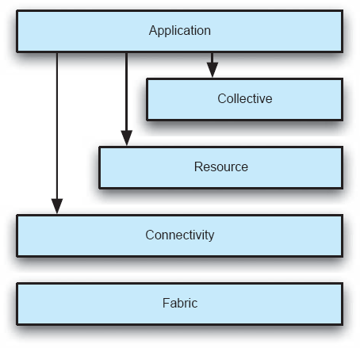
Figura 11-2. Arquitetura da Grade, segundo Foster, Kesselman e Tuecke. Adaptado de (Foster, Kesselman e Tuecke 2001).
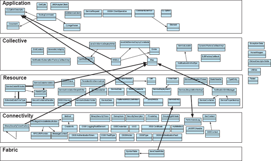
Figura 11-3. Arquitetura da tecnologia Globus Grid (recuperada). (Mattmann, Medvidović et al. 2005).
Estilos Peer-to-Peer
O capítulo 4 introduziu a ideia de arquiteturas peer-to-peer. A discussão ali se concentrou nas características fundamentais das arquiteturas P2P, mas não apresentou muitos detalhes ou justificativas sobre quando o estilo é apropriado. Os exemplos abaixo, Napster, Gnutella e Skype, fornecem alguns desses detalhes.
Híbrido Cliente-Servidor/Peer-to-Peer: Napster
Os sistemas P2P tornaram-se parte do jargão técnico popular devido em grande parte à popularidade do sistema Napster original que surgiu em 1999. O Napster foi projetado para facilitar o compartilhamento de gravações digitais na forma de arquivos MP3. No entanto, o Napster não era um verdadeiro sistema P2P. Suas escolhas de design, no entanto, são instrutivas.
A Figura 11-4 ilustra as principais entidades e atividades do Napster. Cada um dos pares mostrados é um programa independente que reside nos computadores dos usuários finais. A operação começa com os vários pares se registrando no servidor central Napster, rotulado na figura como Diretório de Pares e Conteúdo. Ao se registrar, ou depois fazer login, um par informa o servidor sobre o endereço de Internet do par e os arquivos de música residentes nesse par que o par está disposto a "compartilhar". O servidor mantém um registro da música disponível e em quais pares. Depois, um par pode consultar o servidor para saber onde na Internet uma determinada música pode ser obtida. O servidor responde com as localizações disponíveis; O par então escolhe um desses locais, faz uma ligação direta para esse par e baixa a música.
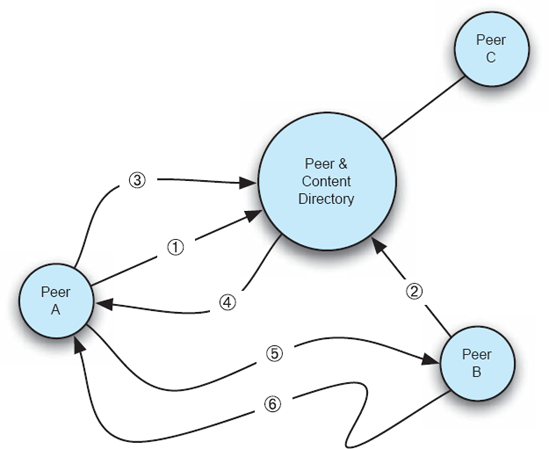
Figura 11-4. Visão teórica da operação do Napster. Nos passos 1 e 2, os Pares A e B fazem login com o servidor. No passo 3, o Peer A consulta o servidor onde ele pode encontrar a "Masquerade" de Rondo Veneziano. A localização do Par B é retornada para A (passo 4). No passo 5, A pede a música para B, que então é transferida para A (passo 6).
Arquitetonicamente, esse sistema pode ser visto como um híbrido entre cliente-servidor e puro P2P. Os pares atuam como clientes ao se registrarem no Diretório de Pares e Conteúdo e ao enviá-lo. Uma vez que um par sabe onde pedir uma música, uma troca P2P é iniciada; Assim, qualquer par pode, às vezes, atuar como cliente (pedindo uma música a outros) ou como servidor (entregando uma música que possui para outro par em resposta a um pedido). O Napster optou por usar um protocolo proprietário para interações entre os pares e o diretório de conteúdo; HTTP era usado para buscar o conteúdo de um par. (A decisão de usar um protocolo proprietário trouxe benefícios duvidosos, incluindo limitar o compartilhamento de arquivos a arquivos MP3.)
A limpeza arquitetônica desse projeto também é sua queda. Se, por exemplo, uma música altamente desejada ficar disponível, o servidor ficará sobrecarregado com solicitações buscando sua(s) localização(ões). E, claro, se o servidor cair ou for derrubado por ordem judicial, todos os pares perdem a capacidade de encontrar outros pares.
P2P Descentralizado Puro: Gnutella
Aliviar as limitações de design do Napster foi um dos objetivos de projeto do Gnutella (Kan 2001). A versão mais antiga da Gnutelle era um sistema puro P2P; Não existe um servidor central — todos os pares são iguais em capacidade e responsabilidade. As figuras 11-5 ajudam a ilustrar o protocolo básico. Semelhante ao Napster, cada um dos pares é um usuário que executa um software que implementa o protocolo Gnutella em um computador independente na Internet. Se o Par A, por exemplo, está buscando uma música específica (ou receita) para baixar, ele faz uma consulta aos pares Gnutella na rede que conhece, os Pares B e H, na etapa 1. Assumindo que não possuem a canção, eles repassam a consulta para os pares que conhecem: um ao outro, e os Pares C e G, no passo 2. A propagação da consulta continua se espalhando por toda a rede até que algum limiar de retransmissão seja ultrapassado (chamado de "contagem de saltos") ou até que um par seja alcançado com a música desejada. Se assumirmos que o Par F tem a música, ele responde ao Par que a perguntou (Peer C no passo 3), dizendo ao Par C que ele tem a música. O Peer C então retransmite essas informações, incluindo o endereço de rede do Peer F, para os pares que solicitaram as informações dele.
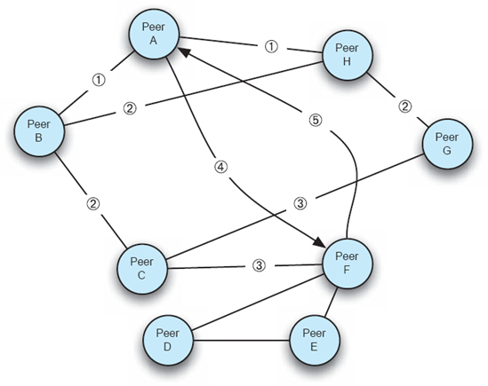
Figura 11-5. Interações notionais entre pares usando o protocolo original Gnutella.
Eventualmente, o Par A obterá o endereço do Par F e poderá então iniciar um pedido direto para F na etapa 4 para baixar a música. A música é baixada no passo 5. Assim como no Napster, o protocolo Gnutella foi projetado sob medida, mas o download direto da música era feito usando uma requisição HTTP GET.
Vários problemas enfrentados pelos sistemas P2P são evidentes neste exemplo. Quando um novo par entra na rede, como ele encontra outros pares para os quais suas consultas possam ser enviadas? Quando uma consulta é emitida, quantos pares acabarão sendo solicitados pelo recurso solicitado depois que outro pares já respondeu e forneceu a informação? Lembre-se de que todos os colegas só conhecem os pedidos que receberam e os pedidos que emitiram ou repassaram; Eles não têm conhecimento global. Quanto tempo deve esperar o colega solicitante para obter uma resposta? Quão eficiente é todo o processo?
Talvez o mais interessante seja que, quando um peer responde que possui o recurso solicitado e o solicitante o baixa, que garantia o solicitante tem de que a informação baixada é a que foi buscada? A experiência com Gnutella revela o que se poderia esperar: frequentemente, a maioria das respostas a uma solicitação de recurso eram vírus ou outros malwares, apresentados para aparecerem superficialmente como o recurso solicitado.
Deixando essas fraquezas significativas de lado, uma observação crítica sobre a Gnutella é que ela é altamente robusta. A remoção de qualquer par da rede, ou de qualquer conjunto de pares, não diminui a capacidade dos pares restantes de continuarem a atuar. A remoção de um par pode tornar um recurso específico indisponível se esse par fosse a fonte única para esse recurso, mas se um recurso estivesse disponível de várias fontes, ele ainda poderia ser encontrado e obtido mesmo que muitos pares fossem removidos da rede. Nesse sentido, a Gnutella reflete o design básico da Internet: roteadores e sub-redes intermediários podem ir e vir, mas o protocolo de Internet oferece uma entrega altamente robusta de pacotes das fontes para os destinos.
Apesar do benefício de ser altamente robusto, as limitações intrínsecas da abordagem Gnutella levaram à busca por mecanismos aprimorados. Versões recentes do Gnutella adotaram parte do uso Napster de "pares especiais" para melhorar, por exemplo, o processo de localização de pares.
Napster e Gnutella são interessantes principalmente por seu papel histórico e pela facilidade em explicar os benefícios e limitações das arquiteturas P2P. Um uso maduro e comercial do P2P é encontrado no Skype, que consideramos a seguir.
P2P sobreposto: Skype
O Skype é um aplicativo popular de comunicação na Internet construído sobre uma arquitetura P2P.[15] Para usar o Skype, o usuário deve baixar o aplicativo Skype apenas do Skype. Em contraste com o Gnutella, não existem implementações de código aberto, e o protocolo Skype é proprietário e secreto. Quando o aplicativo é executado, o usuário deve primeiro se registrar no servidor de login Skype. Após essa interação, o sistema opera de forma P2P.
As figuras 11-6 ilustram como a aplicação funciona com mais detalhes. A figura mostra o Peer 1 fazendo login no servidor Skype. Esse servidor então informa ao par Skype o endereço do Supernó A, que o par então entra em contato. Quando o Par 1 quer ver se algum de seus amigos está online, a consulta é enviada ao supernó. Quando o usuário faz uma chamada Skype (ou seja, uma chamada de voz pela Internet), a interação segue do par que chama para o supernó, e depois para o par receptor diretamente (como para o Par 2) ou para outro supernós e depois para o par receptor. Se ambos os pares estiverem em redes públicas, não atrás de firewalls, então a interação entre os pares pode ser configurada diretamente, como mostrado na figura entre o Pares 2 e o Par-3.
Os supernós fornecem, pelo menos, serviços de diretório e roteamento de chamadas. Suas localizações são escolhidas com base nas características da rede e na capacidade de processamento da máquina em que rodam, bem como na carga dessa máquina. Enquanto o servidor de login está sob a autoridade de Skype.com, as máquinas supernós não estão. Em particular, qualquer par do Skype tem potencial para se tornar um supernó. Os pares do Skype são "promovidos" ao status de supernós com base em seu histórico de desempenho de rede e máquina. O usuário que baixou e instalou o par não tem a capacidade de impedir que o par se torne um supernó. Note as possíveis consequências disso para alguns usuários. Suponha que o dono de uma máquina instale um par Skype, e que ele pague pela conectividade de rede com base na quantidade de tráfego que entra e sai da máquina onde o par está instalado. Se esse par se tornar um supernó, o proprietário então arcará com o custo real de rotear um número potencialmente grande de chamadas — chamadas das quais o proprietário não participa e nem sequer sabe que estão ocorrendo.
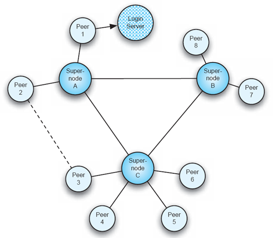
Figuras 11-6. Instância nocional da arquitetura Skype.
Vários aspectos dessa arquitetura são notáveis:
Esse último ponto nos impede de afirmar com muita força como o Skype funciona. Os detalhes aqui fornecidos resultaram de um estudo extensivo do Skype por cientistas terceiros, cujas citações são fornecidas ao final do capítulo. A descrição lateral do Skype que acompanha é baseada em material fornecido no site Skype.com.
Skype via Skype a partir de www.skype.com
"A seguir estão algumas das técnicas que o Skype emprega para oferecer telefonia baseada em IP de última geração.
Travessia de firewall e NAT (Tradução de Endereços de Rede): Clientes e clientes não protegidos por firewall em endereços IP publicamente roteáveis podem ajudar nós com NAT a se comunicar por meio de roteamento de chamadas. Isso permite que dois clientes que, de outra forma, não conseguiriam se comunicar, conversem entre si. Como as chamadas são criptografadas de ponta a ponta, proxies limitam o risco de segurança ou privacidade.
Da mesma forma, apenas proxies com recursos disponíveis são escolhidos para que o desempenho desses usuários não seja afetado.
Várias novas técnicas também foram desenvolvidas para evitar a configuração de gateways e firewalls pelo usuário final, cujas configurações não intuitivas normalmente impedem a maioria dos usuários de se comunicar com sucesso. Em resumo, o Skype funciona atrás da maioria dos firewalls e gateways sem nenhuma configuração especial.
Diretório global descentralizado de usuários: A maioria dos softwares de mensagens instantâneas ou comunicação requer algum tipo de diretório centralizado para estabelecer uma conexão entre usuários finais, a fim de associar um nome de usuário estático e uma identidade a um número IP que provavelmente mudará. Essa mudança pode ocorrer quando um usuário se realoca ou se reconecta a uma rede com um endereço IP dinâmico. A maioria das ferramentas de comunicação baseadas na Internet acompanha os usuários por meio de um diretório central que registra cada nome de usuário e número de IP e monitora se os usuários estão ou não online. Diretórios centrais são extremamente caros quando a base de usuários chega a milhões. Ao descentralizar essa infraestrutura que consome muitos recursos, o Skype consegue concentrar todos os nossos recursos no desenvolvimento de funcionalidades de ponta.
... A tecnologia Global Index é uma rede em múltiplos níveis onde os supernós se comunicam de forma que cada nó da rede tenha pleno conhecimento de todos os usuários e recursos disponíveis com latência mínima.
Roteamento inteligente: Utilizando todos os recursos possíveis, o Skype consegue rotear chamadas criptografadas de forma inteligente pelo caminho mais eficaz possível. O Skype até mantém múltiplos caminhos de conexão abertos e escolhe dinamicamente aquele que é mais adequado no momento. Isso tem o efeito perceptível de reduzir a latência e aumentar a qualidade das chamadas em toda a rede." −2008 © "Skype Limitado".
Troca de Recursos P2P: BitTorrent
O BitTorrent é outra aplicação peer-to-peer cuja arquitetura foi especializada para atingir objetivos específicos. O objetivo principal é suportar a rápida replicação de arquivos grandes em pares individuais, conforme a demanda. A abordagem distinta do BitTorrent é tentar maximizar o uso de todos os recursos disponíveis na rede de pares interessados para minimizar o peso sobre qualquer participante, promovendo assim a escalabilidade.
O problema que o BitTorrent resolve pode ser visto considerando o que acontece no Napster ou no Gnutella, como descrito acima, quando um par na rede tem um item popular. Qualquer par que anuncie a disponibilidade de um recurso (seja registrando o recurso no servidor Napster, seja respondendo a uma consulta de rede, no caso do Gnutella) pode rapidamente se tornar o destinatário de um número muito grande de solicitações para esse recurso — possivelmente mais do que a máquina pode suportar. Essas multidões flash sobrecarregam o servidor peer-server que possui o recurso e, assim, podem desencorajar o proprietário do servidor de participar ainda mais da rede P2P.
A abordagem do BitTorrent é distribuir partes de um arquivo para vários pares e, assim, distribuir tanto as cargas de processamento quanto de rede em várias partes da rede peer. Um par não obtém o arquivo grande solicitado de um único recurso; em vez disso, as partes do arquivo são obtidas de vários pares e depois remontadas. Além disso, o par solicitante não apenas baixa as peças, mas também é responsável por enviar as partes do arquivo que possui para outros pares interessados — lembre-se de que o contexto operacional é aquele em que muitos pares estão simultaneamente interessados em obter uma cópia do arquivo.
Do ponto de vista arquitetonológico, a BitTorrent tomou as seguintes decisões-chave:
Como em todas as aplicações P2P bem projetadas, o BitTorrent leva em conta a possibilidade de qualquer par sair do processo a qualquer momento.
Notas Resumidas sobre Latência e Agência
As seções anteriores abordaram aplicações e arquiteturas que apresentam complexidade substancial decorrente da necessidade de lidar com duas questões principais em sistemas descentralizados: latência e agência. A latência é entendida como um problema há muito tempo, e estratégias para lidar com ela são bem conhecidas. O cache dos resultados, estratégias inteligentes de busca e o uso criterioso de servidores centralizados podem desempenhar papéis na redução da latência.
A agência é uma questão mais rica e de preocupação mais recente. Agência implica preocupações com heterogeneidade (como a das plataformas de linguagens de programação), confiabilidade, incerteza, confiança e segurança. Lidar efetivamente com todas as preocupações causadas por múltiplas agências exige um pensamento cuidadoso. O estilo REST, e os estilos derivados dele, oferecem orientações comprovadas para lidar com vários aspectos tanto da agência quanto da latência. Outras questões permanecem, porém, como confiança e segurança, conforme discutido emCapítulo 13.
ARQUITETURAS ORIENTADAS A SERVIÇOS E SERVIÇOS WEB
Arquiteturas orientadas a serviços (SOA) são direcionadas para apoiar empresas na Internet. A ideia é que o negócio A poderia obter algum serviço de processamento b do fornecedor B, serviço c do fornecedor C, serviço d do fornecedor C, e assim por diante. O serviço que A obtém de C pode ser baseado no resultado obtido de B em uma interação anterior. Como exemplo mais específico, uma empresa pode obter propostas de várias agências de viagens para um itinerário solicitado, selecionar uma delas e então fazer com que essa agência interaja diretamente com subcontratados para contratar os diversos serviços específicos. Esses serviços podem incluir a venda de bilhetes de voos aéreos, obtenção de uma verificação de crédito e emissão de pagamentos eletrônicos para um fornecedor. Todas essas interações seriam suportadas por mecanismos SOA.
A independência das diversas organizações interagintas, ou pelo menos dos serviços que compõem uma SOA, é fundamental para a visão da SOA. Assim, arquiteturas orientadas a serviços são conceitualmente parte do espaço de design descentralizado. As SOAs devem lidar com todas as questões de rede dos sistemas distribuídos, além das questões de confiança, descoberta e dinamismo presentes em sistemas abertos e descentralizados. De fato, arquiteturas orientadas a serviços são os equivalentes baseados em computador dos sistemas descentralizados que vemos ativos no comércio comum de pessoa para pessoa: empresas e clientes interagem entre si de maneiras inúmeras e complexas. Os clientes precisam encontrar empresas que ofereçam os serviços de que precisam, determinar se uma empresa que presta um serviço é confiável, contratar subcontratados, lidar com inadimplências, entre outros.
Do ponto de vista arquitetônico, organizações participantes na Internet apresentam uma camada de máquinas virtuais de serviços da qual os usuários (programas clientes) podem se beneficiar. Essa visão é retratada emFiguras 11-7, quando o cliente tem um objetivo (como obter todas as reservas, passagens e adiantamentos de viagem associados a um itinerário) e recorre a diversos serviços pela Internet para alcançar esse objetivo. Vários desses serviços podem recorrer a outros serviços da rede para alcançar seus subobjetivos. A máquina virtual da rede de serviços é bastante diferente das arquiteturas de máquinas virtuais discutidas emCapítulo 4contudo. Os diversos serviços SOA, correspondentes a funções em uma arquitetura clássica de máquina virtual, são oferecidos por diferentes agências de controle; Eles podem ser implementados de maneiras muito variadas, apresentar riscos variados (como ser personificado por uma agência maliciosa), podem aparecer e desaparecer ao longo do tempo, e assim por diante. O desafio, portanto, é fornecer o suporte necessário a um cliente que deseja usar a rede de serviços para alcançar seus objetivos.Serviços web, uma forma particular de fornecer uma SOA, responde a esse desafio oferecendo uma infinidade de abordagens, padrões e tecnologias.
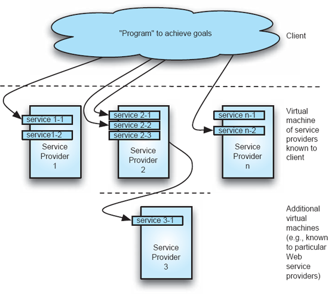
Figuras 11-7. Serviços web como uma máquina virtual em camadas.
O problema central é: como, arquitetonicamente, a noção de aplicações de negócios criadas usando a máquina virtual da rede de serviços deve ser concretizada? A resposta, não surpreendentemente, envolve:
Além disso, pode-se considerar como novos serviços são descobertos, já que o contexto é um em que agências independentes podem criar novos serviços que as empresas podem querer integrar em seus processos atuais.
Os serviços dos SOAs são simplesmente componentes independentes, como discutimos e ilustramos ao longo do texto. Eles têm uma interface que descreve quais operações fornecem. Eles têm seu próprio fio de controle. Os serviços podem ser descritos no mundo dos Web Services usando WSDL — a Web Services Description Language. WSDL descreve serviços usando XML como uma coleção de operações que podem ser realizadas sobre dados tipados enviados para/do serviço. Em um contexto SOA mais geral, suas interfaces podem ser descritas por APIs escritas em alguma linguagem de programação específica, como Java ou Ruby.
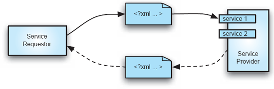
Figuras 11-8. Dois modelos de interação com serviços Web.
Conectores são a parte mais interessante dos SOAs. O mecanismo mais simples usado pela SOA é a notificação assíncrona de eventos. A metade superior da Figura 11-8 ilustra isso. O modelo básico neste exemplo é que um solicitante de serviço envia um documento XML para um provedor de serviço através da rede por meio de uma variedade de protocolos, desde e-mail até HTTP. A obrigação de ambas as partes é que o documento XML seja estruturado de forma que ambos o compreendam. Nesse modelo mais simples, o provedor de serviço pode tomar alguma ação ao receber e ler o documento, mas não há obrigação de devolver nada ao solicitante. Naturalmente, há muitas situações em que a interação desejada é realmente que o provedor devolva informações ao solicitante; isso também é apoiado, e é mostrado nas linhas pontilhadas na metade inferior da Figura 11-8. Note que, neste segundo exemplo, o modelo de conexão mudou de eventos unilaterais e assíncronos para um modelo assíncrono de solicitação-resposta, assemelhando-se a uma chamada de procedimento remoto ou talvez a uma invocação de método de objeto distribuído.
Um ponto chave aqui, claro, é que tais interações não possuem a mesma semântica que uma chamada de procedimento remoto ou a semântica de uma invocação distribuída de objetos. A presença de questões de agência, a interação baseada na troca de documentos XML e a ausência de várias semânticas de programação, como persistência de objetos, são a base para essas diferenças.
Com relação à aplicação como um todo, essencialmente o que é necessário é uma linguagem de descrição de arquitetura, como considerada detalhadamente emCapítulo 6. As SOAs exigem, no entanto, que a ADL usada seja executável; formalidade e semântica completa são portanto exigidas. Basicamente, uma aplicação SOA poderia ser descrita em uma linguagem de script genérica, mas isso provavelmente obscureceria relações importantes entre os serviços. A escolha mais natural é usar uma linguagem que permita a expressão eficaz dos fluxos de trabalho/processos empresariais. Uma linguagem utilizada é WS-BPEL, a Linguagem de Execução de Processos de Negócios de Serviços Web. BPEL é uma linguagem de script composicional; ou seja, um programa BPEL pode aparecer como um serviço (componente) em outro fluxo de trabalho. A linguagem é tipada e expressa em XML estaticamente, embora editores gráficos proprietários estejam disponíveis.
Outros estilos e conceitos arquitetônicos aparecem em SOAs. Destaca-se o uso de mecanismos de publicação-assinatura para descobrir serviços ou provedores de serviços recém-disponíveis. Outros desenvolvedores criaram modelos declarativos para utilizar serviços Web, semelhantes ao estilo de interpretador discutido emCapítulo 4. A maioria—senão todos—dos estilos discutidos emCapítulo 4foram usados em algum lugar do mundo dos serviços Web. (Note, porém, que embora a literatura sobre Web Services às vezes fale de um "conjunto em camadas de protocolos", isso não implica uma arquitetura em camadas, já que descrições de protocolos frequentemente não correspondem a componentes.)
Apesar do modelo central simples da SOA, na prática há muita complexidade. Essa complexidade surge da tentativa de satisfazer simultaneamente muitos objetivos, como a interoperabilidade entre plataformas heterogêneas, enquanto lida com as dificuldades inerentes a sistemas abertos e descentralizados. Toda essa complexidade não necessariamente resulta em uma abordagem eficaz. Por exemplo, a decisão de fazer com que os provedores de serviço anunciem e apoiem serviços específicos que outros podem "invocar" — a decisão das máquinas virtuais — induz um tipo particular de fragilidade e rigidez. Caso um provedor de serviço mude a interface de um serviço, todos os usuários desse serviço devem tomar conhecimento da mudança e modificar suas solicitações de acordo. Isso é diretamente análogo aos problemas de programação em uma linguagem como Java e de ter uma assinatura pública de método modificada — todo o código dependente dessa interface precisa mudar. Por esse e outros motivos, muitos desenvolvedores de aplicações empresariais descentralizadas optaram por basear seus projetos no REST (focando assim na troca de representações/dados), em vez de SOAP/Web services (focando assim na invocação de funções com argumentos).[16] Amazon.com, por exemplo, oferece seus serviços Web aos desenvolvedores, seja em forma REST ou como interfaces SOAP/Web Services. Na prática, as interfaces baseadas em REST têm se mostrado populares entre os desenvolvedores.
Essa decisão de design SOA de focar na invocação de interfaces funcionais não foi a única opção. Assim como nem todos os programas dependem de chamadas para interfaces públicas, poderia ter sido definido um SOA em que solicitantes de serviço apresentam descrições dos cálculos que desejam realizar e deixam para os provedores de serviço determinar se conseguem realizar esse cálculo e, em caso afirmativo, como.
Palavras sobre Palavras em Serviços Web
A literatura popular sobre serviços Web está repleta de siglas e jargões; Um pouco de cautela para os leitores é necessário. O padrão de serviços Web que regula como os documentos XML trocados devem ser estruturados e trocados é o SOAP. SOAP costumava significar "Simple Object Access Protocol", mas, claro, "objects" não estão sendo acessados, então SOAP agora é apenas um nome — mas um onde todas as letras estão sempre em maiúsculas.
De forma semelhante, serviços Web às vezes são descritos como "RPC sobre HTTP", quando HTTP é usado como protocolo de transporte para mensagens SOAP. Claro que as ações não são as mesmas de uma chamada remota de procedimento, então isso também é impreciso.
O uso do termo "serviços Web" sugeriria que a tecnologia Web está necessariamente envolvida em serviços Web — como um servidor Web ou navegador. Servidores web como o Apache não são necessários para responder a uma mensagem SOAP, então "Web services" também é um termo equivocado.
A diversão começa quando você chega aos acrônimos. Eles cobrem padrões e abordagens para construir vários modelos "arquitetônicos" sobre uma rede de serviços, para governar a troca de informações na rede, para lidar com as muitas complexidades de um mundo multiagências e em rede, entre outros. O agregado das especificações de serviços Web (como WS-Security, WS-MessageData, WS-Events, WS-Coordination, WS-Policy, WS-Reliability e muitos outros) é às vezes chamado de WS-*, também conhecido como "a Estrela da Morte dos serviços Web." Caveat emptor.
ARQUITETURAS DE DOMÍNIOS ESPECÍFICOS
Esta seção examina as arquiteturas de aplicações de alguns domínios específicos. Por meio deste exame, mostramos, por exemplo, como vários estilos e padrões arquitetônicos foram refinados e explorados para fornecer o núcleo fundamental de soluções eficazes. Embora as arquiteturas sejam extraídas de domínios de aplicação específicos, as técnicas usadas no desenvolvimento das arquiteturas de solução, as análises que acompanharam o projeto e até mesmo os estilos resultantes são amplamente úteis, indo além dos limites desses domínios de origem.
Robótica
O campo da robótica consiste em uma classe de sistemas que revela grande diversidade baseada nas diferenças no grau de autonomia e mobilidade que os diversos sistemas robóticos exibem. Exemplos dessa variedade são:
Desafios
Do ponto de vista arquitetônico e geral da engenharia de software, dois fatores são os principais responsáveis por tornar o desenvolvimento de software desafiador no domínio da robótica: as plataformas físicas e dispositivos que compõem os robôs e a natureza imprevisível dos ambientes em que operam.
Plataformas robóticas são integrações de um grande número de dispositivos sensíveis propensos a falhas, como comunicações de rádio sem fio e sensores de visão, complicando a necessidade de integrar os dispositivos de forma coerente. Os sistemas de software que operam plataformas robóticas devem ser capazes de continuar operando diante da diminuição da capacidade de hardware e da perda de funções essenciais. As informações fornecidas por dispositivos de hardware, como sensores, também podem apresentar um alto grau de falta de confiabilidade e picos intermitentes de leituras erradas nos sensores, exigindo a capacidade não apenas de continuar operando, mas também de compensar perfeitamente tais erros.
O segundo elemento desafiador é a necessidade de operar em ambientes que podem ser dinâmicos e imprevisíveis. Desenvolver um robô móvel capaz de atravessar terrenos desconhecidos sob condições climáticas variadas e com obstáculos potencialmente móveis, por exemplo, aumenta muito a dificuldade de projetar seus sistemas de controle por software de forma a considerar e continuar operando sob condições não totalmente previstas durante o projeto e desenvolvimento do sistema.
Diante desses desafios e da natureza do domínio, várias qualidades de software são de especial interesse em arquiteturas robóticas: robustez, desempenho, reutilização e adaptabilidade. A falta de confiabilidade de muitos ambientes robóticos motiva a necessidade de robustez; As exigências frequentemente rigorosas de trabalhar em um ambiente em tempo real (o mundo em que o robô opera) induzem exigências específicas de desempenho. A necessidade de reutilização de componentes de software desenvolvidos em diversos sistemas robóticos é impulsionada pelo alto custo de desenvolver os módulos de alto desempenho e confiáveis necessários para o domínio. Além disso, muitas plataformas robóticas usam os mesmos ou componentes de hardware muito semelhantes e, portanto, compartilham uma necessidade comum de drivers e interfaces para esses dispositivos. Por fim, a adaptabilidade é particularmente importante, já que a mesma plataforma de hardware pode ser usada com um sistema de controle de software modificado para realizar uma tarefa diferente com dispositivos inalterados.
Arquiteturas Robóticas
Arquiteturas robóticas têm suas origens em técnicas de inteligência artificial para representação e raciocínio do conhecimento. Posteriormente, foram aprimorados em resposta a deficiências na aplicação desses conceitos, bem como a avanços gerais no campo. As seções seguintes apresentam uma breve visão geral dessa evolução, discutida no contexto de exemplos arquitetônicos específicos, as tendências que elas incorporam e suas principais decisões e objetivos arquitetônicos.
Sentido-Plano-Ação. Reconhecendo a incapacidade de construir sistemas robóticos usando apenas algoritmos de busca por inteligência artificial sobre um modelo mundial, oSentido-plano-agir(SPA) (Nilsson 1980) identifica a necessidade de usar feedback contínuo do ambiente de um robô como uma entrada explícita para o planejamento das ações. Arquiteturas SPA contêm três componentes de grão grosso com um fluxo unidirecional de comunicação entre eles, como ilustrado emFiguras 11-9:OsentidoO componente é responsável por coletar informações dos sensores do ambiente e é a interface principal e o driver dos sensores de um robô. Essas informações do sensor são fornecidas como entrada para oplanoque utiliza essa entrada para determinar quais ações o robô deve realizar, que são então comunicadas aoagircomponente — a interface e o driver para os motores e atuadores do robô — para execução. Nesse nível de detalhe, a arquitetura se assemelha ao padrão senso-computação-controle (SCC) deCapítulo 4. Uma análise mais detalhada revela, no entanto, uma distinção importante.
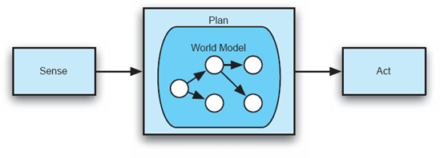
Figura 11-9. Uma ilustração das arquiteturas SPA. A ênfase está no planejamento de ações baseadas em sua subarquitetura de modelo de mundo interno.
O componente plano é o principal motor do comportamento dos robôs nas arquiteturas SPA. Inspirando-se em técnicas de inteligência artificial, o planejamento envolve o uso de dados sensoriais para conciliar o estado real do robô — deduzido por esses dados sensoriais — com um modelo interno do estado do robô no ambiente. Esse modelo interno é então usado em conjunto com uma especificação de tarefa para determinar quais ações devem ser realizadas em seguida pelo componente de ação para completar a atividade pretendida do robô. O modelo interno é atualizado repetidamente em resposta a novos estímulos sensoriais adquiridos, indicando o progresso que o robô está fazendo (se houver), com o objetivo de manter o modelo consistente com as condições ambientais reais. O padrão SCC, em contraste, não mantém tal modelo nem realiza planejamento sofisticado.
Do ponto de vista arquitetônico, a arquitetura SPA captura um fluxo iterativo unidirecional de dados entre os três componentes, semelhante a uma arquitetura pipe-and-filter, com uma subarquitetura para o componente do plano variando e dependendo do tipo de planejamento e modelo de estado robótico usado por uma arquitetura SPA específica.
Sistemas que seguem a arquitetura SPA enfrentam uma série de questões, principalmente relacionadas ao desempenho e escalabilidade. A principal desvantagem é que as informações dos sensores precisam ser integradas — chamadas de fusão de sensores — e incorporadas nos modelos de planejamento do robô para que as ações sejam determinadas em cada etapa da iteração da arquitetura: essas operações são bastante demoradas e geralmente não acompanham a taxa de mudanças ambientais. O desempenho dessa atualização e avaliação iterativa do modelo não escala bem à medida que as capacidades e objetivos do sistema robótico se expandem. Esse baixo desempenho é uma desvantagem quando o ambiente muda rápida ou imprevisível, e é o principal motor para o desenvolvimento de arquiteturas robóticas alternativas.
Subsunção. Tentando abordar as desvantagens das arquiteturas SPA, a arquitetura de subsunção (Brooks 1986) toma uma decisão arquitetônica fundamental: o abandono de modelos e planos de mundos completos como elemento central dos sistemas robóticos. Embora o fluxo de informação se origine em sensores e eventualmente termine em atuadores que efetuam a ação (como nas arquiteturas SPA e SCC), não há uma etapa explícita de planejamento interposta entre esse fluxo. As arquiteturas de subsunção — como pode ser visto nas Figuras 11-10 — são compostas por vários componentes independentes, cada um encapsulando um comportamento específico ou habilidade robótica. Esses componentes são organizados em camadas sucessivamente mais complexas que se comunicam por meio de duas operações: inibição e supressão. Essas operações são usadas, respectivamente, para impedir a entrada de um componente e para substituir a saída de um componente. Na figura, a saída da Habilidade C pode causar um atraso na entrada da Habilidade A para a Habilidade B no tempo t; da mesma forma, a saída da Habilidade C pode sobrescrever a saída da Habilidade B para o Atuador 1 pelo tempo t.
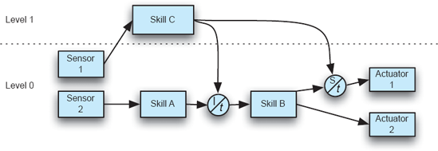
Figuras 11-10. Uma ilustração de uma arquitetura de subsunção de exemplo, mostrando as operações de inibição e supressão entre os níveis dos componentes.
A característica arquitetônica fundamental das arquiteturas de subsunção é a modularização do comportamento e funcionalidade dos robôs: em vez de o comportamento ser representado em um único modelo, componentes independentes organizados em camadas capturam cada um um aspecto do comportamento geral sem uma única representação abrangente. Cada um desses componentes depende independentemente de entradas sensoriais para desencadear as ações que deveria realizar, e o comportamento geral dos robôs emerge da execução dessas ações sem um plano central que coordene esse comportamento. Arquiteturas de subsunção, portanto, são de natureza mais reativa. Essa característica aborda explicitamente as limitações de desempenho das arquiteturas SPA, e as arquiteturas de subsunção ganharam popularidade por seu desempenho rápido e ágil.
Arquitetonicamente, a subsunção adota uma abordagem baseada em componentes para o fluxo básico de dados entre sensores e atuadores, permitindo ciclos de fluxo de dados, embora as interfaces desses componentes sejam simples e capturem o valor de um único sinal. Em contraste com a SPA, o comportamento geral de um robô de subsunção depende da topologia geral do sistema e de como os componentes são conectados, em vez de um único modelo abstrato.
Arquiteturas de subsunção não são isentas de desvantagens, apesar de suas melhores características de desempenho em comparação com robôs SPA. A principal desvantagem da subsunção na prática é a falta de um plano arquitetônico coerente para camadas e suporte consequente. Embora a conceituação da arquitetura de subsunção descreva o uso de camadas para organizar componentes de diferentes complexidades, não há orientação ou suporte explícito para tal estratificação na arquitetura. Componentes são inseridos no fluxo de dados dependendo de sua tarefa específica, sem que sua posição necessariamente esteja relacionada à camada dentro da qual estão posicionados, e sem que componentes pertencentes à mesma camada sejam inseridos de maneiras e posições semelhantes.
Três camadas. Após o desenvolvimento da subsunção, várias alternativas foram desenvolvidas que tentaram fazer a ponte entre os planos da SPA e a natureza reativa da subsunção; essas arquiteturas híbridas podem ser agrupadas sob o rubrico de arquiteturas de três camadas (3L). [Um dos primeiros exemplos é encontrado em (Firby 1989).] As arquiteturas 3L amplamente adotadas — ilustradas nas Figuras 11-11 — são caracterizadas pela separação da funcionalidade do robô em três camadas (cujos nomes podem variar de sistema para sistema): a camada reativa, que reage rapidamente a eventos no ambiente com ação rápida; a camada de sequenciamento, responsável por vincular funcionalidades presentes na camada reativa a comportamentos mais complexos; e o planejamento camada, que realiza um planejamento de longo prazo mais lento.
Com a adoção de três camadas separadas, cada uma preocupada com um aspecto diferente da operação do robô, as arquiteturas 3L tentam combinar tanto operação reativa quanto planejamento de longo prazo. A camada de planejamento, então, executa tarefas de maneira semelhante às arquiteturas SPA, mantendo informações de estado de longo prazo e avaliando planos de ação com base em modelos das tarefas do robô e de seu ambiente. A camada reativa — além de conter as funções e habilidades básicas do robô, como agarrar um objeto — captura comportamentos reativos que devem ser executados rápida e imediatamente em resposta às informações ambientais. A camada de sequenciamento que liga as duas é responsável por ligar os comportamentos reativos da camada em cadeias de ações, bem como por traduzir direções de alto nível da camada de planejamento para essas camadas de loencing da arquitetura. A camada de sequenciamento, então, geralmente é simplesmente uma máquina virtual que executa programas escritos nessas ações em nível de swer. A maioria das arquiteturas 3L adota algum tipo de linguagem de script de propósito especial para a implementação das linguagens de sequcripting.
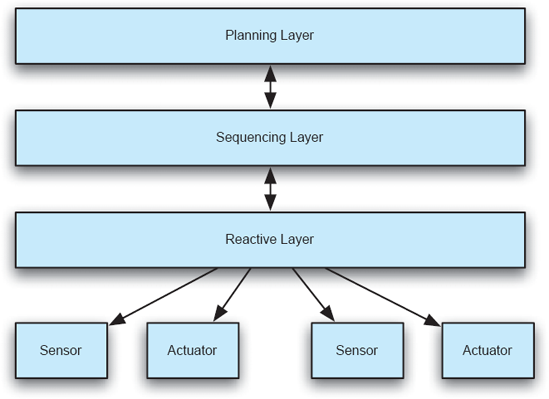
Figuras 11-11. Uma ilustração das arquiteturas 3L, mostrando a relação entre cada camada e os sensores e atuadores básicos.
Do ponto de vista arquitetônico, o 3L é um exemplo de arquitetura em camadas com um fluxo bidirecional de informações e diretivas de ação entre as camadas, enquanto utiliza componentes independentes para formar cada camada. O comportamento das arquiteturas 3L depende não apenas da disposição de seus componentes, mas também da operação da subarquitetura interna da camada de sequenciamento.
Um dos desafios associados ao desenvolvimento de arquiteturas 3L é entender como separar funcionalidades em três camadas. Essa separação depende das tarefas e objetivos específicos do robô e há pouca orientação arquitetônica para ajudar nessa tarefa; A separação depende em grande parte da expertise de projeto do arquiteto. Dependendo das tarefas que o robô deve realizar, também há uma tendência de uma camada dominar drasticamente outras em importância e complexidade, o que obscurece a natureza híbrida das arquiteturas 3L. A interposição da camada de sequenciamento no meio da arquitetura também resulta em dificuldades ao traduzir as diretrizes de planejamento de nível superior para execuções em níveis inferiores. Essa tradução exige a manutenção e reconciliação dos modelos de mundo e comportamento potencialmente díspares mantidos pelas camadas de planejamento e sequenciamento, podendo causar sobrecarga desnecessária de desempenho.
Orientado à Reutilização. Após o desenvolvimento e uso generalizado de arquiteturas híbridas 3L, o foco dos esforços recentes em arquitetura robótica mudou para a aplicação de tecnologias modernas de engenharia de software, com o objetivo principal de aumentar o nível de reutilização de componentes e, assim, maximizar os retornos sobre o tempo e custo investidos em seu desenvolvimento. Embora muitos desses sistemas adotem ideias e princípios das arquiteturas discutidas anteriormente e exibam diferentes graus de camadas e subarquiteturas baseados em planejamento ou modelagem de tarefas, seu foco principal é uma definição clara de interfaces e a promoção do reuso.
As principais técnicas e tecnologias que essas arquiteturas orientadas ao reuso adotam são definições explícitas de interface orientadas a objetos para componentes e o uso de frameworks middleware para o desenvolvimento de componentes que podem ser reutilizados entre projetos. A arquitetura do projeto de veículo aéreo não tripulado WITAS (Doherty et al. 2004), por exemplo, adota o CORBA como mecanismo de troca de informações e impõe interfaces claramente definidas para cada componente usando o CORBA IDL. Também adota uma abordagem híbrida que utiliza uma subarquitetura de linguagem de especificação de procedimentos de tarefas de propósito especial para tomada de decisão e planejamento. Além de possibilitar o reutilizo, essa abordagem também possibilita a operação distribuída dos componentes robóticos para melhor utilização dos recursos. Outro exemplo dessa classe de sistemas pode ser encontrado na arquitetura de software robótico reutilizável CLARATy (Nesnas et al. 2006): Essa arquitetura de duas camadas adota uma abordagem de rede objetivo para planejamento, focando na definição de interfaces genéricas de dispositivos que identificam claramente as funções primárias de uma classe de dispositivos de forma desacoplada do dispositivo específico usado em qualquer instância particular de uma arquitetura CLARATy. Ao fazer isso, diferentes dispositivos do mesmo tipo (como telêmetros, por exemplo) podem ser integrados perfeitamente à arquitetura, sem a necessidade de redefinir a interface desse dispositivo.
Estruturas de Desenvolvimento para Sistemas Robóticos
Embora muitos sistemas robóticos sejam projetados e construídos de forma independente, diversos frameworks e ferramentas foram desenvolvidos para facilitar e acelerar o processo de desenvolvimento. Cada uma dessas estruturas geralmente é direcionada a um aspecto específico do desenvolvimento robótico e inclui suporte especial para esse fim. Embora certamente não seja uma pesquisa completa, o seguinte apresenta brevemente alguns dos mais populares.
Redes de Sensores Sem Fio
Sistemas robóticos representam um tipo de aplicação muito ativo: o software deve fazer com que um sistema físico execute um conjunto de tarefas. Redes de sensores são, por assim dizer, uma aplicação em grande parte reativa: sua primeira tarefa é monitorar o ambiente e relatar seu estado. Sistemas de redes de sensores sem fio (WSN) são atualmente usados em diversos domínios, incluindo sistemas médicos, navegação, automação industrial e engenharia civil para tarefas como monitoramento e rastreamento. Esses sistemas desfrutam dos benefícios de baixo custo de instalação, manutenção barata, fácil reconfiguração e assim por diante. No entanto, as WSNs podem ser muito desafiadoras de implementar, pois podem precisar ser integradas a redes cabeadas legadas, outros dispositivos embarcados e redes móveis que incluem PDAs e celulares para notificação ao usuário. Os próprios dispositivos sem fio geralmente são altamente limitados em relação ao consumo de energia, largura de banda e alcance de comunicação, além da capacidade de processamento. Sistemas de sensores sem fio impõem restrições adicionais em relação à tolerância a falhas, desempenho, disponibilidade e escalabilidade.
O Centro de Pesquisa e Tecnologia Bosch, em conjunto com pesquisadores da Universidade do Sul da Califórnia, explorou como as WSNs devem ser projetadas para enfrentar a multiplicidade de desafios presentes (Malek et al. 2007). O design centrado na arquitetura que surgiu para as aplicações da Bosch é interessante, pois combina explicitamente três estilos arquitetônicos distintos para alcançar todos os objetivos do sistema. O desenho está esboçado nas Figuras 11-12.
Como retratado, a arquitetura de referência do MIDAS aplica três estilos arquitetônicos diferentes. A parte peer-to-peer da arquitetura é mostrada na parte inferior do diagrama. É responsável pelas atividades de implantação, incluindo a troca de componentes em nível de aplicação. A parte de publicação-assinatura do MIDAS corresponde à espinha dorsal de comunicação responsável pelo roteamento e processamento dos dados dos sensores entre as diversas plataformas. A parte orientada a serviços do MIDAS é representada no topo do diagrama. Esses serviços representam instalações genéricas, mas menos usadas de monitoramento e adaptação de sistemas. Esses serviços são distribuídos entre as plataformas.
ASSUNTO FINAL
O tema central deste capítulo tem sido que arquiteturas para aplicações complexas resultam de um entendimento profundo do domínio de aplicação, escolha cuidadosa dos elementos constituintes e estilos baseados na experiência e suas propriedades conhecidas, e hibridização desses elementos em uma solução coerente. REST é o exemplo por excelência disso. A Web não seria o sucesso que é hoje sem essa arquitetura cuidadosa.
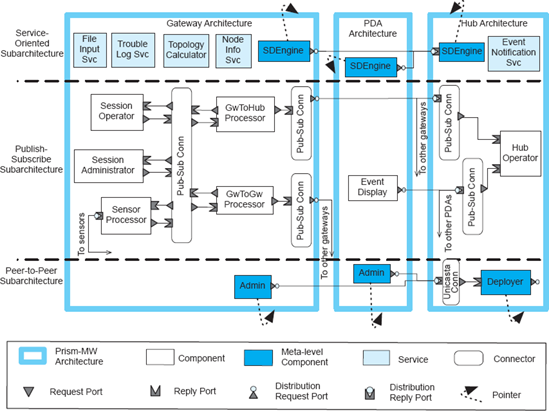
Figuras 11-12. A arquitetura da rede de sensores sem fio MIDAS. Diagrama adaptado de (Malek et al. 2007) © IEEE 2007.
Mais do que apenas exemplificar como um estilo complexo surge da combinação de elementos de estilos mais simples, o REST ilustra meios importantes para lidar com problemas que surgem devido à presença de problemas de rede, notadamente latência e agência. Assim, o REST serve como um modelo do qual soluções para problemas relacionados podem ser derivadas.
Questões de rede — especialmente latência e agência — foram enfatizadas no capítulo, já que uma proporção cada vez maior das aplicações agora é baseada em rede. A discussão sobre sistemas peer-to-peer destacou preocupações com a descoberta de outros pares, busca por recursos e riscos devido a potenciais problemas de desempenho e entidades maliciosas. As questões específicas de segurança e confiança serão abordadas em detalhes emCapítulo 13.
Note que, só porque uma aplicação cresce em escopo, a arquitetura da solução não necessariamente se torna mais complexa. A compreensão da essência de um problema, aliada à exploração eficaz de algumas ideias simples, pode gerar uma aplicação altamente eficaz. Isso é claramente o caso, por exemplo, com Google, Akamai e Skype. Grandes soluções para problemas comerciais difíceis não acontecem do nada: elas resultam de grandes arquiteturas que refletem experiência, escolha e gosto exigente.
A preocupação com propriedades não funcionais, como escala, desempenho e segurança, tem dominado os projetos considerados neste capítulo. Nos próximos três capítulos, examinamos especificamente como projetar para alcançar tais propriedades. As técnicas de design apresentadas em cada um desses três capítulos surgiram da experiência na criação de aplicações como as mencionadas acima.Capítulo 12considera propriedades como eficiência e confiabilidade, enquantoCapítulo 13é dedicado a projetar aplicações para alcançar certas propriedades de segurança e confiança. A propriedade não funcional deadaptabilidadeVista na discussão anterior, por exemplo, sobre sistemas peer-to-peer recebe tratamento adicional aprofundado emCapítulo 14.
O Caso de Negócios
O desenvolvimento de uma ótima arquitetura de software é um passo fundamental para garantir o sucesso financeiro de longo prazo de uma linha de produtos de software. A gestão de produto e dificuldades financeiras surgem quando uma arquitetura inicial não consegue acomodar mudanças e novas demandas. Escalar um produto para atender a novas demandas em quantidade de processamento é um exemplo simples e tradicional. O surgimento da rede como leitmotiv da maioria das novas aplicações apresenta, no entanto, um desafio maior e mais sutil do que o desempenho. Além dos riscos de segurança levantados, a rede oferece os desafios e oportunidades de trabalhar em um mundo aberto e dinâmico. O potencial é para aplicações que se adaptam mais rapidamente às circunstâncias em mudança, seja do lado do consumidor individual ou em termos de alianças comerciais.
Esse novo cenário apresenta desafios particulares para o desenvolvimento interno de sistemas. Se uma organização tradicionalmente trabalhou apenas em um contexto fechado, baseado em LAN, migrando para uma rede aberta (ou até mesmo uma intranet distribuída globalmente), é provável que a transição seja difícil. Novas tecnologias, e notadamente arquiteturas novas e distintamente diferentes, são necessárias.
PERGUNTAS DE REVISÃO
EXERCÍCIOS
LEITURA ADICIONAL
Referências para estudos adicionais de arquiteturas distribuídas e do estilo REST foram fornecidas no texto. Centrais são o texto de Tanenbaum sobre sistemas distribuídos (Tanenbaum e van Steen 2002), a dissertação de Fielding (Fielding 2000) e a publicação subsequente em periódicos (Fielding e Taylor 2002).
A arquitetura do Google está se tornando cada vez mais pública, com muitas de suas tecnologias descritas em artigos disponíveis na labs.google.com/papers.html. O Sistema de Arquivos do Google, por exemplo, é explicado em (Ghemawat, Gobioff e Leung 2003) e o MapReduce é apresentado em (Dean e Ghernwat 2004). Mais informações sobre Akamai estão disponíveis em (Dilley et al. 2002); outros recursos estão disponíveis no site da empresa.
Como mencionou o texto principal do capítulo, conhecer exatamente a arquitetura do Skype é um pouco difícil de determinar porque o software cliente foi obscurecido usando várias técnicas sofisticadas. A arquitetura descrita no texto reflete uma análise forense. Uma publicação chave nesse sentido é (Baset e Schulzrinne 2004), que reflete a observação do cliente Skype em ação. Outro projeto trabalhou na análise do código oculto do cliente. Os resultados podem ser encontrados em recon.cx/en/f/vskype-part1.pdf e recon.cx/en/f/vskype-part2.pdf.
Boas referências para serviços Web são um pouco difíceis de encontrar. Muitas publicações e sites são superficiais em sua apresentação técnica, imprecisos ou focados apenas em uma faceta restrita. Uma boa introdução, no entanto, é encontrada em (Vogels 2003). Um artigo tecnicamente mais rico é (Manolescu et al. 2005). O WS-BPEL-PEL é descrito em (OASIS 2007).
Uma arquitetura de computação de alto desempenho que forma um contraste interessante com arquiteturas de grade é a MeDICi (Gorton 2008; Gorton et al. 2008).
A arquitetura do Linux foi recuperada e descrita (Bowman, Holt e Brewster 1999), mostrando as diferenças entre as arquiteturas prescritiva e descritiva da aplicação. Como mencionado em outro lugar neste texto, a arquitetura do servidor Web Apache também foi recuperada e descrita (Gröne, Knöpfel e Kugel 2002; Gröne et al. 2004). Ambos os projetos são estudos interessantes em recuperação arquitetônica; Eles também são úteis para observar retrospectivamente como múltiplos estilos são combinados para resolver problemas desafiadores.
[13] A Web como existe hoje, na forma da união do HTTP/1.1, URI e outros padrões, juntamente com várias implementações de servidores, não deve ser equiparada ao REST. Vários elementos da Web atualmente em uso entram em conflito com o RESTO; as origens dessa deriva arquitetônica são exploradas na dissertação de Fielding, citada anteriormente.
[14] Um limite de agência denota o conjunto de componentes que operam em nome de uma autoridade comum (humana), com o poder de estabelecer acordo dentro desse conjunto (Khare e Taylor 2004).
[15] Skype é uma marca registrada da Skype Limited ou de outras empresas relacionadas.
[16] Veja o recurso "Palavras sobre Palavras em Serviços Web" para saber mais sobre o termo SOAP.